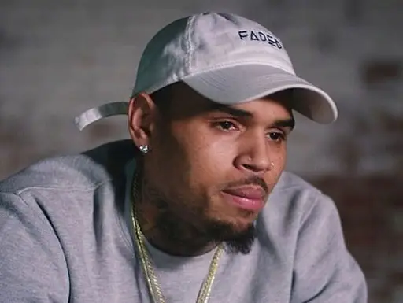

CHRIS BROWNIE

Christopher Maurice Brown nasceu em 5 de maio de 1989,[20] na pequena cidade de
Tappahannock,na Virginia,[21]
filho de Joyce Hawkins e Clinton Brown, um oficial de correções em uma prisão local.[22][23] Brown é o filho
mais novo do casal, ele tem uma irmã mais velha, Lytrell Bundy ( Tootie ),[24] que trabalha em um banco. Desde
a sua infância, a música
era algo que sempre esteve presente na vida de Brown. Ele costumava ouvir álbuns clássicos que seus pais
tinham, mas, eventualmente, Brown começou a mostrar i
nteresse na cena de hip-hop.[20] Brown aprendeu sozinho a
cantar e dançar em uma
idade jovem, muitas vezes citando Michael Jackson como inspiração.[25][26] Ele então começou a se apresentar
no coro da igreja e em vários shows de talentos locais. Enquanto fazia um cover do cantor Usher, sua mãe
reconheceu o seu talento
vocal e eles começaram a procurar oportunidades de um contrato de gravação. Ao mesmo tempo, Brown havia
passado por questões pessoais. Seus pais já tinham sido divorciados, e ele disse que o namorado de sua mãe o
fez ficar depressivo o tempo
todo, devido à violência doméstica que sua mãe sofreu do namorado.[27] Aos 13 anos, Brown foi descoberto por
uma equipe de produção local, Hitmission Records, que visitou o posto de gás de seu pai enquanto procurava
novos talentos.[28] Lamont
Fleming da Hitmission começou o treinamento com a voz de Brown, e a equipe ajudou a organizar uma demo,
aproximando contatos em Nova York para buscar um contrato de gravação. Brown mudou-se para Nova York em torno
do mesmo tempo. Tina Davis
executiva da Def Jam Recordings ouviu a voz de Brown em um teste em seu escritório na Island Def Jam em Nova
York. Ela imediatamente o levou para conhecer o ex-presidente da Def Jam Recordings Antonio "LA" Reid, que se
ofereceu para contratá-lo
no mesmo dia. "Eu sabia que Chris tinha um talento re
devido ao seu trabalho bem sucedido com jovens artistas como Britney Spears e Justin Timberlake.[30] Afirma
Brown, "Eu escolhi a Jive porque eles tinham sucesso com os artistas mais jovens no mercado pop, [...] eu
sabia que estava indo para
capturar o meu público americano, mas a Jive tinha muita força na área pop bem como a longevidade na carreira
".
Nalde Benny
Ronaldo Jorge Silva, mais conhecido como Naldo, nasceu em 19 de abril de 1981 no bairro de Bonsucesso,
Rio de Janeiro. Seu pai era soldador elétrico e sua mãe dona de casa. Começou a cantar aos 7 anos, em
uma igreja evangélica perto de sua casa. Aos 15
anos, formou dupla com o irmão, Lula, que morreu em 2008. Naldo seguiu em carreira solo e no final de
2012 mudou seu nome para Naldo Benny, explicando que Benny vem do hebraico e significa abençoado. É
casado com Ellen Cardoso
(Mulher Moranguinho) e é pai de Pablo, fruto de um relacionamento anterior. São dele os sucessos Amor de
Chocolate, Chantilly, Exagerado, entre outros. Apesar de não ser religioso, Naldo foi criado em uma
família que frequenta
a Assembleia de Deus, onde seus pais têm o cargo de guardiões.[4][2][4][17] Em 1995, Naldo saiu da casa
dos pais para morar com sua primeira namorada, a empresária Branka Silva. O casal teve um filho, Pablo
Jorge, nascido em 1998.
Em 2003, após oito anos vivendo juntos, oficializaram a união em uma cerimônia civil, mas se separaram
em 2010, e se divorciaram em 2017.[18] Em entrevistas, Branka admitiu ter feito quatro abortos, e que
foi obrigada pelo ex-marido
a fazer isso, já que possuíam uma condição financeira difícil, e ele não queria ser pai
novamente.[19][20] Em 2010, Naldo começou a namorar a dançarina Ellen Cardoso, com quem foi viver junto
em 2013. Em 26 de fevereiro de 2015
nasceu a única filha do casal, Maria Victória. Ellen já tem um filho do primeiro casamento, assim como
Naldo.[21][22] Em dezembro de 2017 seu casamento com Ellen chegou ao fim, quando ele foi denunciado por
Ellen, que o acusou
de tê-la agredido. Naldo também foi preso por possuir uma arma em sua residência sem possuir habilitação
para porte de arma. Sua ex-esposa veio a público afirmar que Naldo a traía com Ellen, e que, depois de
ele casar com Ellen,
Branka voltou a se relacionar com Naldo, mas que logo se separaram. O mais polêmico fato foi que Branka
afirmou que também era constantemente traída e agredida por Naldo durante o casamento que tiveram.
Branka atualmente está separada
do segundo marido, com quem teve uma filha.[23]
FUCKING SHIT
Nosso Nalde contou que o Chris Brown o reconheceu em uma festa, além disso a mãe de Brownie o confundiu com o filho o chamando de "Breezy"
LUGAR ESPECIAL
o segredo foi revelado o lugar especial para pessoas especiais
existe! endereço: Rua Jacinto Leite Aquino Rego